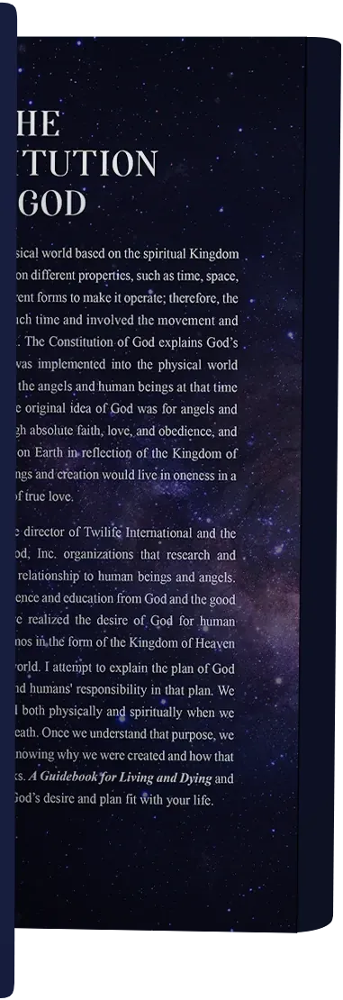

Quiz
Which book should I read?
Six questions name this book and the chapter that fits you: foundations, the Second Adam, the nation, or the full arc.
Start the quizLoading
Official author edition, 2026
Heaven, America, and the purpose of life, brought together in one constitutional and theological argument.
“Please read this with an open mind.”
The 2026 author edition
Fourteen chapters, bound as one argument. Copies are arranged with Mark Steffen: a personal copy, a signed set, or books for a study group.
The hub
One manuscript, three ways to enter it, and a journal that stays with the argument after you close the chapter.
Quiz
Six questions name this book and the chapter that fits you: foundations, the Second Adam, the nation, or the full arc.
Start the quizReviews
Three editorial reviews of the architecture: the fourteen-chapter arc, the civic echo, and how a group can use the book.
Read the reviewsJournal
Divine order, the Second Adam, Heaven and America, and a practical way to read the fourteen chapters with other people.
Open the journalAt a glance
Quick details at a glance
The book
“Read with an open mind. This book is a constitutional and theological reflection on creation, purpose, and destiny.”
Mark Steffen
Inside This Book
Three pillars frame the argument: God’s constitutional order, the long drama of sin and restoration, and the convergence of Heaven’s purpose with America’s founding ideals.
How God’s original constitution shapes creation, covenant, and the moral architecture of human freedom.
Read the chapterFrom the origin of sin through the Second Adam to the lineage chain and the hope of return and renewal.
Read the chapterThe makeup of creation, the American constitution as a civic echo, and the purpose of life united with the desire of a nation.
Read the chapterThe Journey
Many readers keep faith in one compartment and citizenship in another. This book offers one constitutional lens that holds them together.
The Challenge
Modern life often separates faith, civic life, and personal purpose. Without a coherent constitutional view of God and humanity, culture drifts from first principles.
Explore the challengeThe Vision
Scripture, lineage, and national ideals are woven into a single arc so readers can see creation, redemption, and calling in one light.
Explore the visionReader Entry Points
Start where your questions run deepest. Each chapter takes you into a key chapter in the full fourteen-chapter sequence.
Official Editions
The same mockups used for retailers, interviews, and this site, tuned for clear presentation on dark backgrounds.
Visual system
High-resolution covers and spine treatments balance authority with accessibility. They work well in press kits, bookstore listings, and social campaigns.

The Book Inside
Reference lists and study notes for readers who teach, preach, or lead groups through the manuscript.
Resources & notes
Books and references on Heaven and how we enter it, chosen for follow-up reading after the manuscript.
Browse resources
Study materials
Frameworks for theological and constitutional discussion in community.
View study aidsWho It’s For
Whether you’re reading alone, teaching others, or exploring ideas together, this site is designed for you.
Quick Answers
Find answers to common questions about the book, its content, themes, and how it can help you on your journey.
Frequently Asked Questions
Find quick answers to the most common questions about the book, its structure, and how to get the most out of your reading experience.
A fourteen-chapter theological manuscript by Mark Steffen. It follows one argument from God’s original constitution through sin, lineage, and restoration in Christ, and on to creation, the American constitutional ideal, and the purpose of life.
Fourteen chapters, in the 2026 author edition. The site groups them into three reading paths: foundations (chapters 1–5), restoration (chapters 6–10), and nation and purpose (chapters 11–14).
Individual readers, teachers and pastors, and study groups who want Scripture and the American experiment held in one constitutional frame. Media and institutions can use the Resources page and the contact form.
Take the reader quiz for a starting chapter, or open the chapter list and choose Foundations, Restoration, or Nation and Purpose. Readers who want the full argument should begin with chapter 1.
Use the contact form and name the topic: media, event, rights, or a reader question.
Take the Next Step
Open the full chapter list, use the Resources page for context, or write in for media and speaking requests. Each major topic on this site has its own page.